Tyskland
Tyskland är ett land i centraleuropa och gränsar till många länder; Nederländerna, Belgien, Luxemburg, Frankrike, Schweiz, Österrike, Tjeckien, Polen och Danmark. Tysklande var även ett utav de länder som var med och skapade EU under 1950-Talet, då endast Västtyskland då Landet var uppdelat i två delar, Öst och Väst-Tyskland, efter andra världskriget Landet har kust till Östersjön och nordsjön till norr. Landet delar också geografi med Alperna i söder.

Så här ser Tyskland ut
| Tyskland | |
|---|---|
| Invånare: | 83,2 miljoner |
| Huvudstad: | Berlin |
| Språk: | Tyska |
| Medlem sedan: | 1 januari 1958 |
| Valuta: | Euro |
| Yta: | 357 376 km2 |